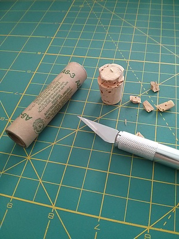
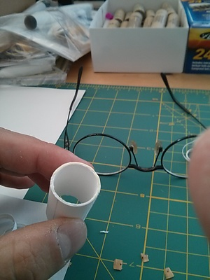
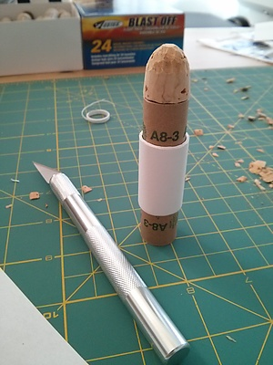
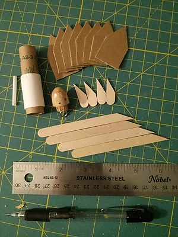
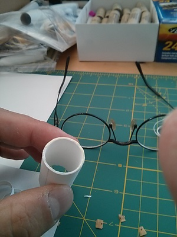
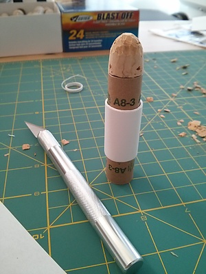
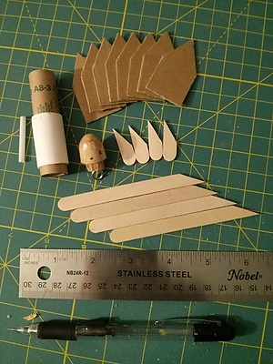
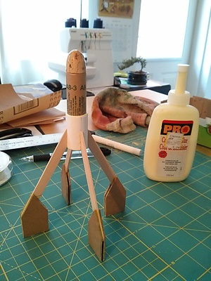
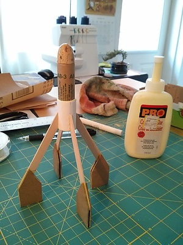
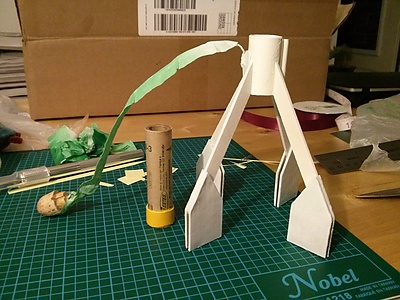

corknoseconesmall.jpg" title="" />
 selfmadebodytubesmall.jpg" title="" />
motorwithnoseandtubesmall.jpg" title="" />
mostpartssmall.jpg" title="" />
selfmadebodytubesmall.jpg" title="" />
motorwithnoseandtubesmall.jpg" title="" />
mostpartssmall.jpg" title="" />

 previewofthingstocome_small.jpg" title="" />
previewofthingstocome_small.jpg" title="" />
primingthebasesmall.jpg" title="" />